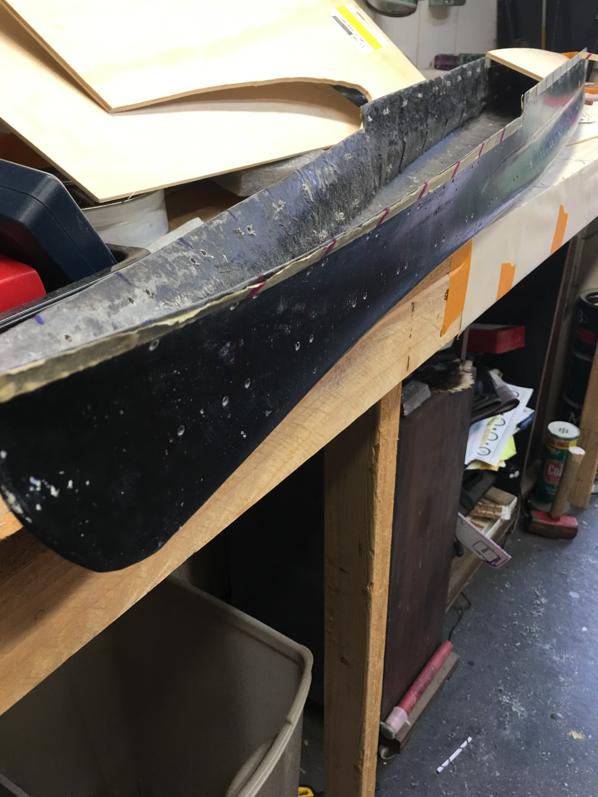
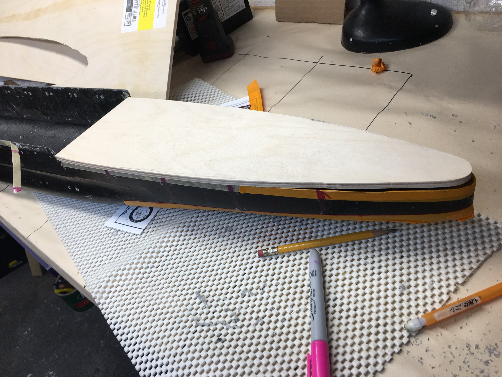
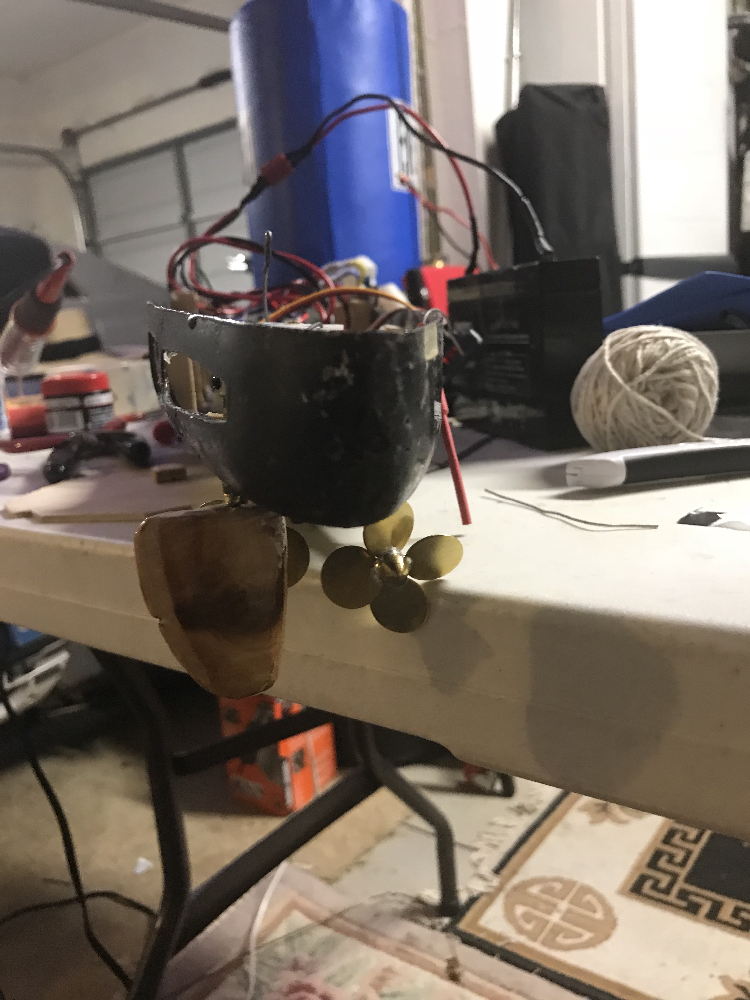
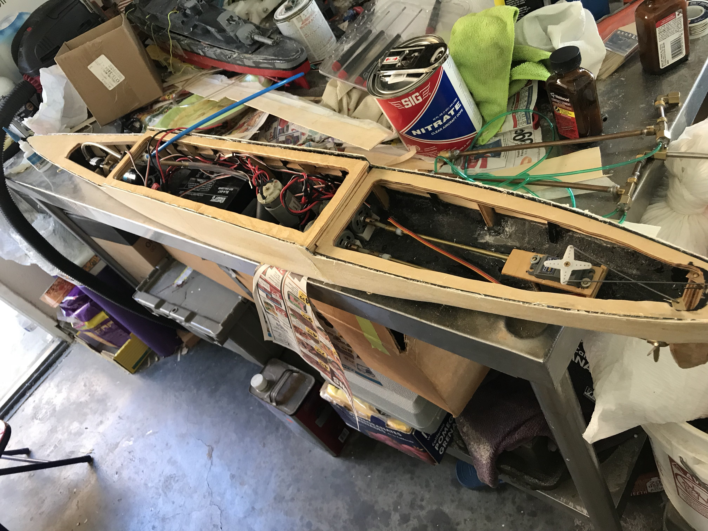
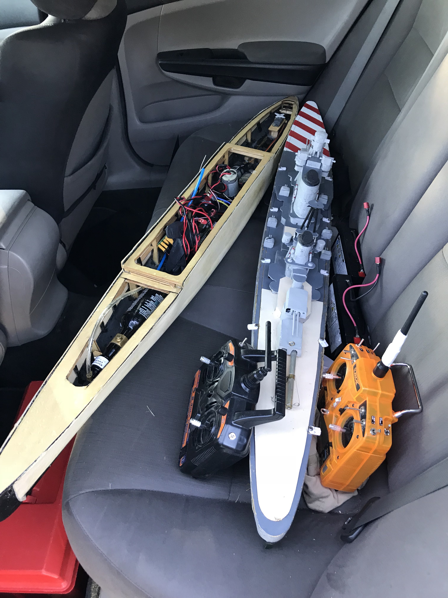
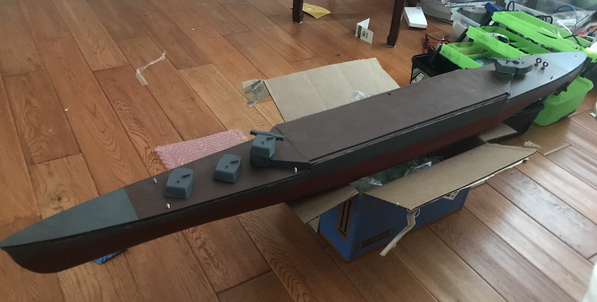

Cruiser? I hardly know her!
Warships have always been an interest of mine. When I found out about a local rc warship hobby group in my area, I was estatic. The idea of being able to mix hobby electronics with warships and sink stuff at the same time was understandably exciting.
 Tis just a flesh wound!
Tis just a flesh wound!
I inherited the trusty little Italian destroyer of the namesake Scipione Africanus from an old-timer of the hobby, affectionately referred to as the sippycup for short. My play style thus far has been to start plinking at the older veterans in their battle wagons and quickly running like hell when they came too close, (I wasn't very successful, as seen below) but I soon felt the need for an upgrade...
 Tis just a flesh wound?
Tis just a flesh wound?
I started assembling my new ship, the Japanese Mogami class heavy cruiser Kumano, soon after the 506th time kissing the bottom of the lake sometime in Febuary. The work began with a bare fiberglass hull, which I shaped and cut using various tools, using a dremel to cut out the ribs. The shaping of the hull was shortly followed by cutting and fitting decks and the gathering/creation of electrical subsystems that would be used on the ship.
 Don't look much like a ship at this point. Measure twice, cut once, sand for eternity.
Next came the "fun" part, also the most time consuming: Building out the juicy internals, in order: building propulsion and steering subsystems (propeller shafts, rudders, motors, servos), electrical and control subsystems, and finally, armament subsystems (cannons, solenoids). Ran into quite a few problems reguarding the orientation of the rudder shafts with the hull, they ended up coming out at a bit of an angle instead of straight up and down. Made quite a few rookie mistakes that I'm not proud of, but what can you do? ¯\_(ツ)_/¯
I've opted to use battler connection's Multi-C board. Highly recommend for anyone looking to build. Costs a pretty penny but it worked wonders for me. Modularity is king. Also using Hobby wing's Cheap ESC line for motor control. First one was a bust and died within a the first few days of testing, but the second one is still going strong.
 Cutting and sanding fiberglass is not a fun way to spend the weekend.
Cutting and sanding fiberglass is not a fun way to spend the weekend.

 Here's what she looks like after all the parts and mounts were thrown in and sheeted.
 Ready for testing! Guest appearance by Pola.
 All painted up! IJN colors are real purrrrty...
As of now, I'm still waiting on the superstructure, but for all intents and purposes she's ready for battle. Starboard cannon is still real finnicky to shoot, most likely after cutting it down to size and putting it back together. Nothing a little tinkering can solve. Summer is over, but eventually I shall return and finish what I started!